A decade of building the optics rather than just using them — from the lattice light sheet and SCAPE microscopes running today at Rockefeller, back through a combined OCT/light-sheet system for embryo imaging at Houston, to the interferometers that characterized structured light at Colgate.
A structured, ultra-thin excitation sheet from a lattice of Bessel beams, originated by Chen et al., Science (2014) — built here for speed and low phototoxicity in live-sample imaging.
Lattice light sheet microscopy replaces a single Gaussian sheet with an interference pattern of Bessel beams, holding the sheet thin over a much longer working distance and doing far less photodamage than conventional widefield or confocal excitation — the trade is a build with many more optical elements to align and keep aligned.
I built and aligned this system at Rockefeller from the published architecture, modifying its optical layout to suit the bioscience researchers who'd be using it, and wrote its acquisition software in Micro-Manager — taking it from a dense breadboard of individually-mounted optics to an instrument with a working camera-triggering and data-collection pipeline.
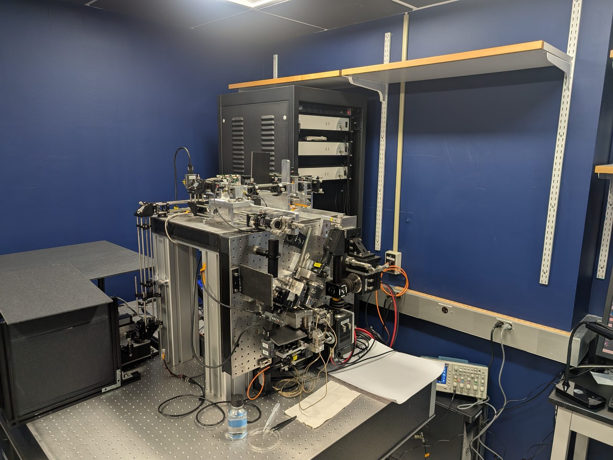
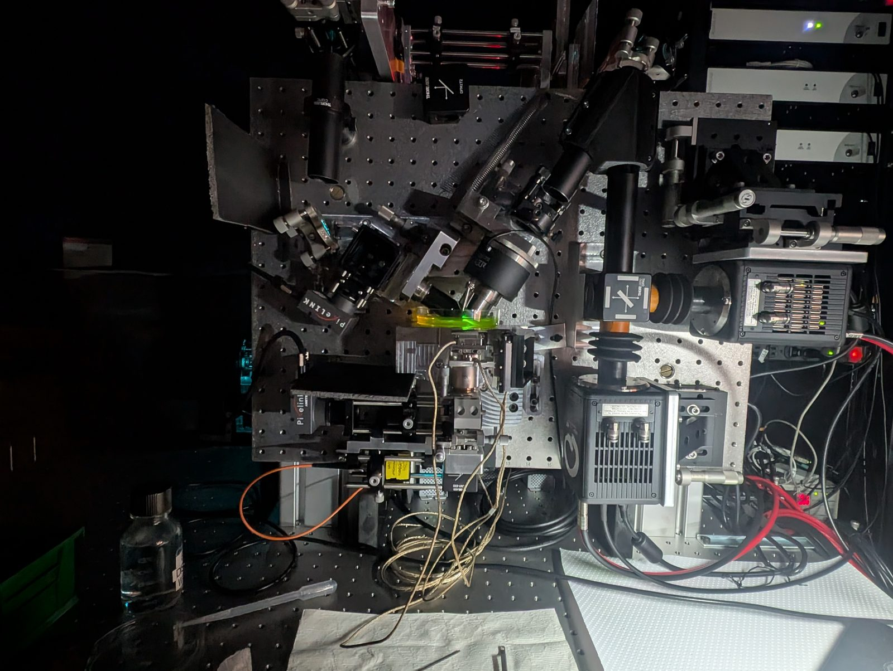
Swept Confocally-Aligned Planar Excitation — a single-objective light-sheet technique originated by Bouchard et al., Nature Photonics (2014), replicated here from the published architecture and brought online from an empty room.
Most light-sheet microscopes need two objectives at right angles: one to sheet the sample, one to look at it. SCAPE does both through a single objective, descanning the fluorescence with the same galvo that swept the excitation sheet across the sample — which is what makes it usable on a sample sitting flat on a stage rather than mounted between two lenses.
I designed and built the optics lab this system lives in at Rockefeller from the ground up, then built and aligned the SCAPE architecture from the published literature: sourcing and aligning every optical element, redesigning parts of the setup to fit the needs of the bioscience researchers using it, working out hardware modifications for individual student projects, and adapting the MATLAB acquisition and processing code so the instrument could actually be run by someone other than its builder.
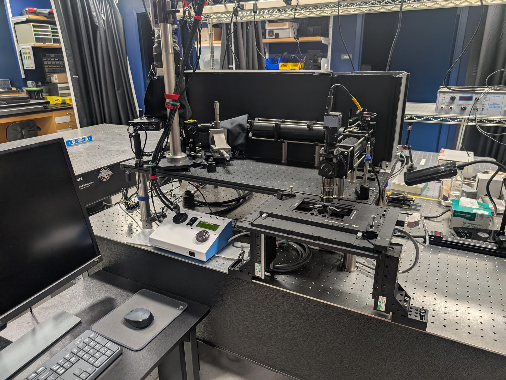
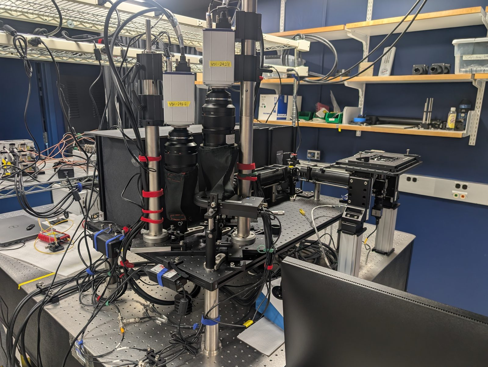
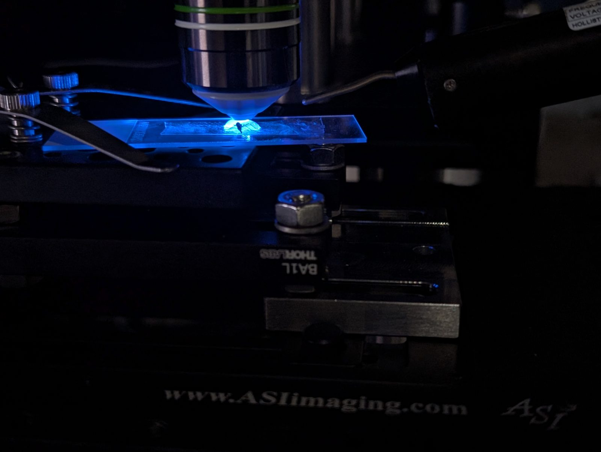
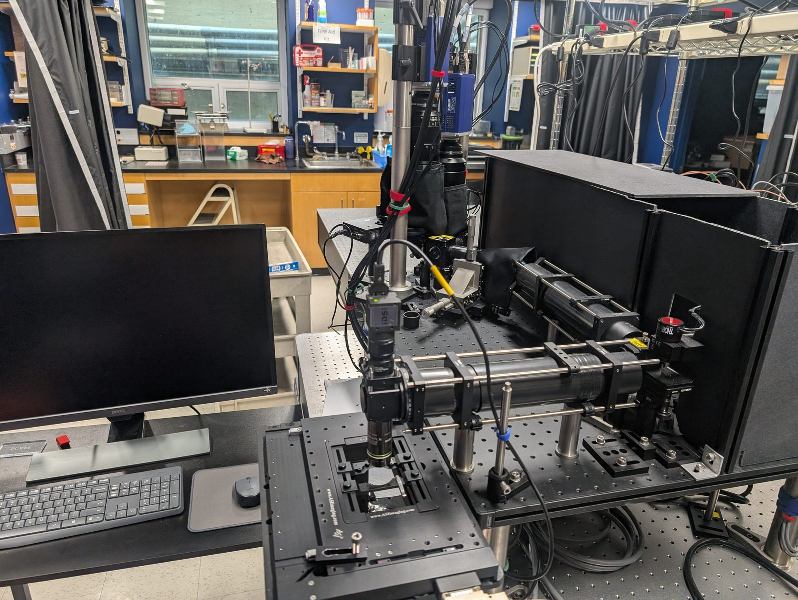
Second postdoc: an interferometric diffuse correlation spectroscopy (iDCS) system for noninvasive blood-flow monitoring, built in the Martinos Center optics group under Stefan Carp.
Diffuse correlation spectroscopy reads blood flow noninvasively from the speckle fluctuations of coherent light after it scatters through tissue, but the signal is weak and conventional single-photon-counting detection limits both sampling rate and depth. Mixing that diffusely scattered light with a reference beam — an interferometric, or heterodyne, detection scheme — recovers the signal against a much larger carrier, trading a more involved optical setup for higher sensitivity and speed.
I built both arms of the system: a 1060 nm source split by a 90/10 fiber coupler into a sample arm (delivered and collected through a multimode fiber bundle, with cylindrical- and Powell-lens beam shaping) and a single-mode reference arm recombined on a 12.5µm-pixel detector array. The photo below shows part of the sample-arm fiber launch and beam path during alignment.
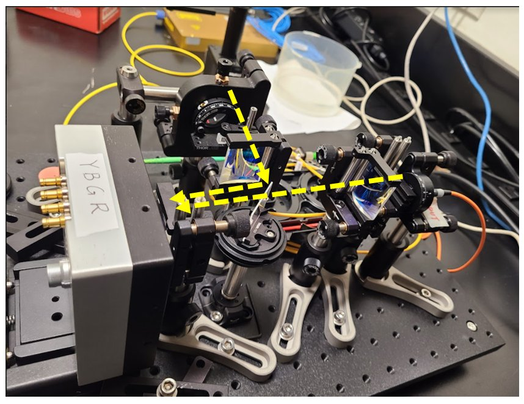
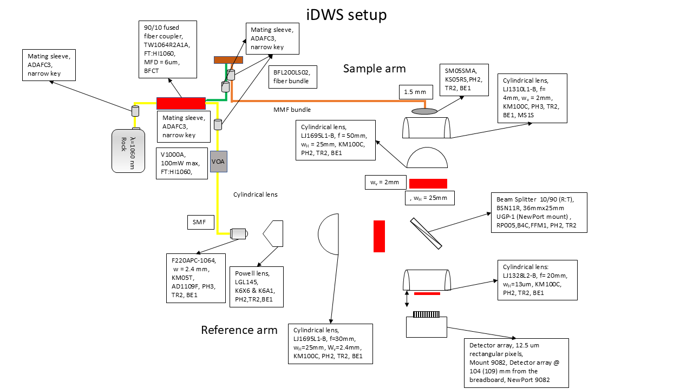
First postdoc: a combined OCT/LSFM instrument for co-registered structural and molecular imaging of live mouse embryos — where the light-sheet work above started.
Optical coherence tomography gives fast, label-free structural imaging but no molecular specificity; light-sheet fluorescence microscopy gives that specificity but nothing about surrounding structure. This system put both beams through the same scan optics so they stayed co-planar, letting a single pass image tissue structure and fluorescently-labeled cells from the same plane of a live mouse embryo at the same time.
As first author, I built the combined hardware — the shared galvo scanning, the polarization-beam-splitter combining path, the translation-stage z-sectioning — and the software that acquired and co-registered both modalities. A later two-photon version of the excitation path, published in 2025, extended the achievable imaging depth in scattering tissue.
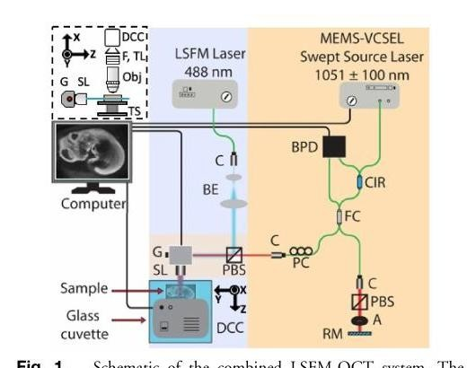
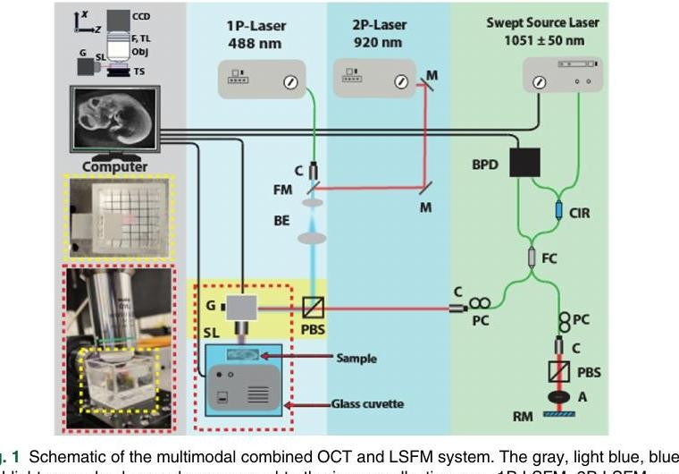
A second, parallel-acquisition OCT technique from the same postdoc: wide-field, camera-based structural imaging at close to micron resolution.
Rather than scanning a beam point-by-point like conventional OCT, full-field OCT illuminates the whole field at once and captures interference at a camera, trading depth range for near-micron axial and lateral resolution with no beam scanning at all. Getting useful contrast means keeping the sample and reference arms matched almost exactly — the concentric fringes below are what the system looks like once that alignment is right.
I used this system to image the layered structure of onion skin and, separately, a rat's cornea, resolving individual cell layers across a total imaging depth of about 50 µm.
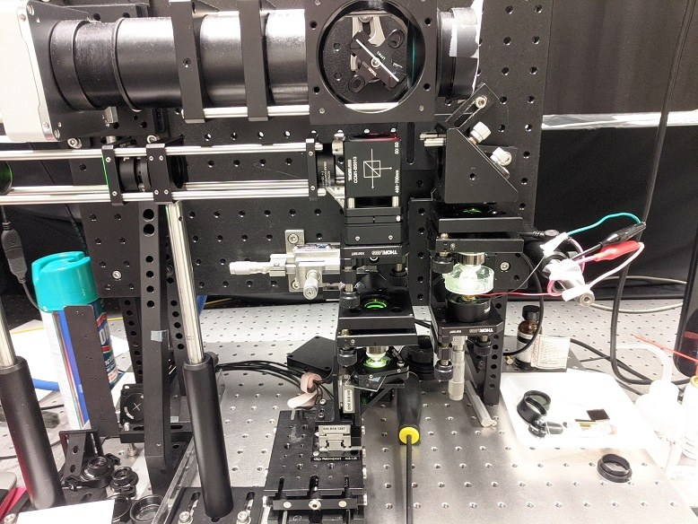
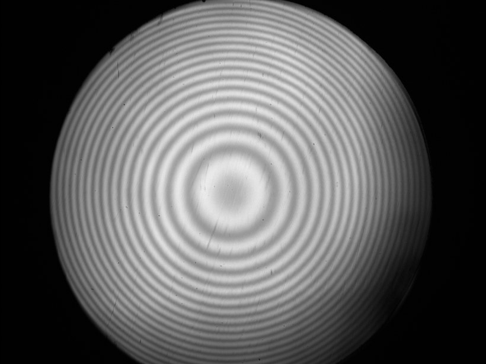
Doctoral work on determining the topological charge of structured light beams by shearing them against their own mirror image — the technique behind the 2017 Optics Letters paper and U.S. Patent 10,935,803.
A beam carrying orbital angular momentum has a helical phase front, and its topological charge ℓ is normally read off an interference pattern — but conventional interferometry needs a second, known reference beam. Shearing the beam against a laterally-displaced copy of itself, produced by a single wedged optical flat, removes that requirement: the fringe pattern's own fork-like dislocations encode both the magnitude and sign of ℓ directly.
I built the interferometer around a Thorlabs SI100P wedged flat, characterized it against a fully collimated beam to confirm phase-front flatness, and used it to resolve both single vortices and superpositions of two different charges as their relative phase was swept through a full period. The video below is from that measurement — a (2,−4) charge superposition as the relative phase α steps from 5° to 90°.
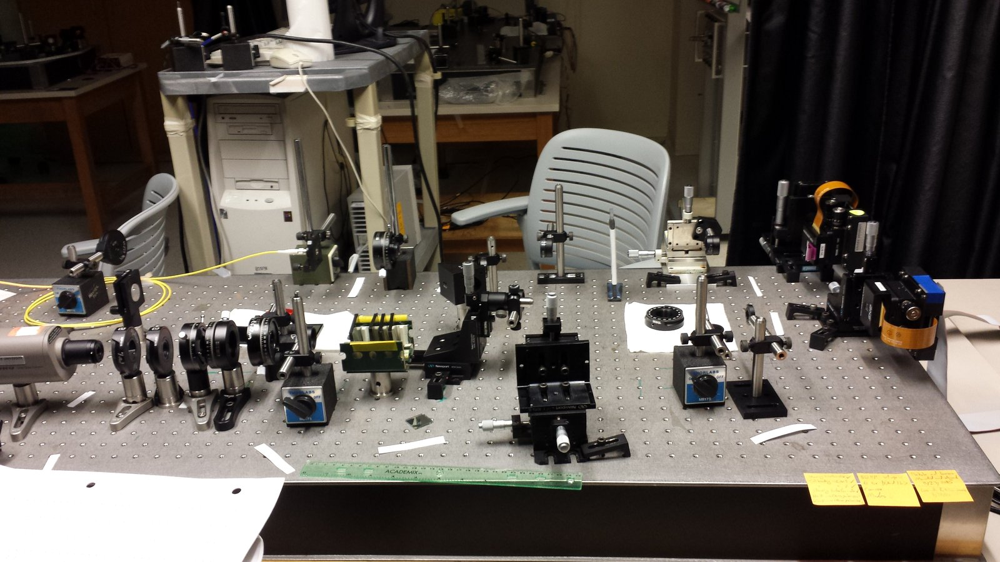
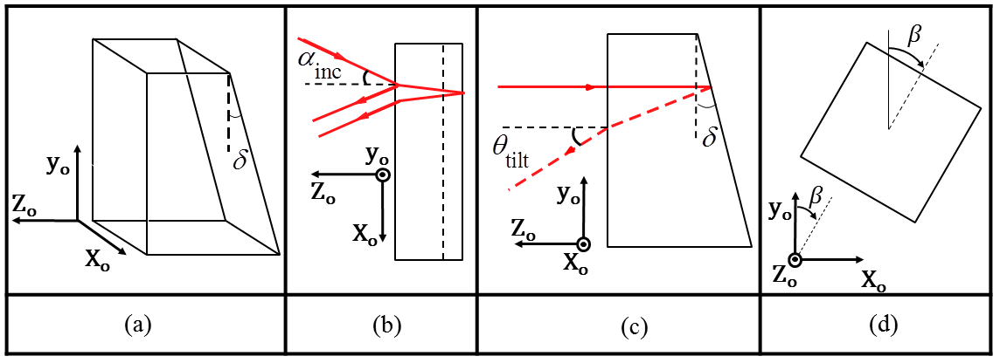
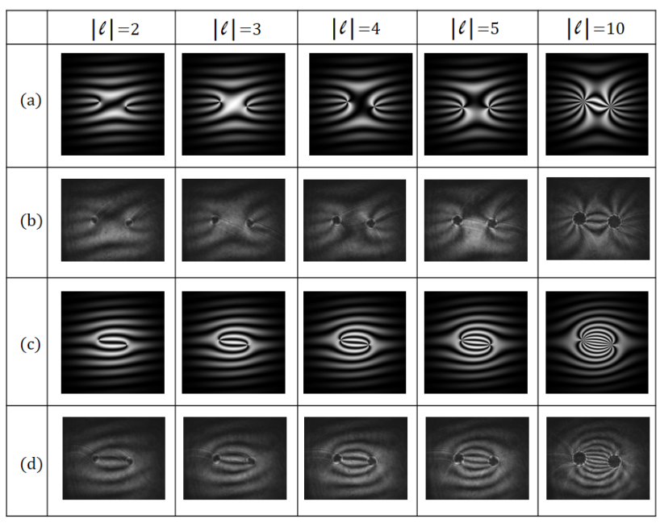
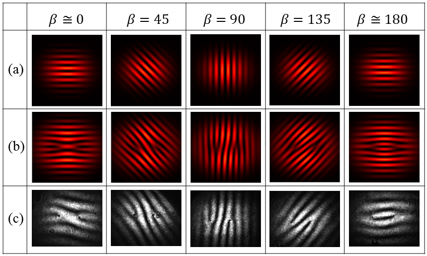